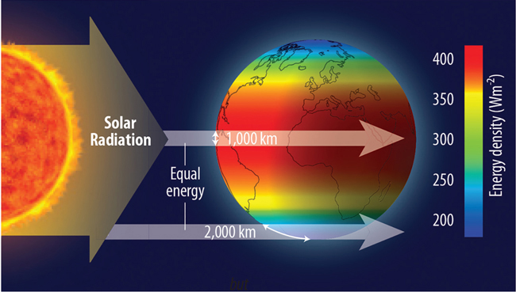
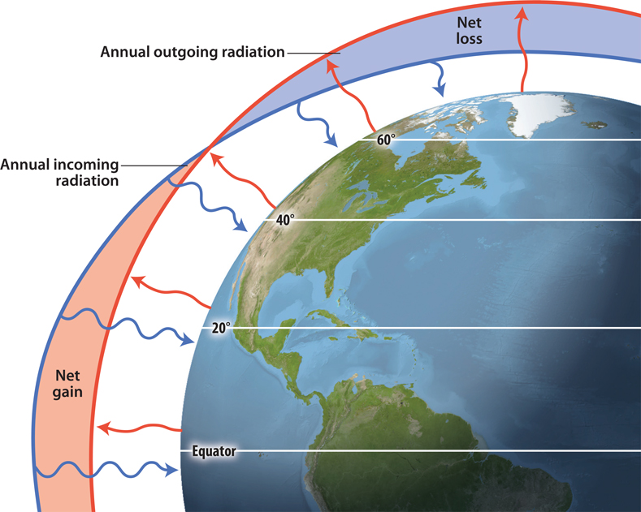
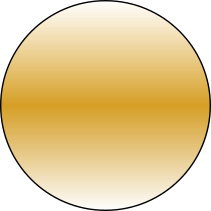
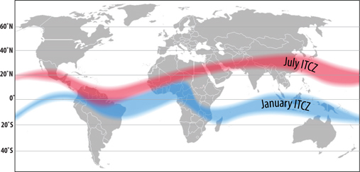
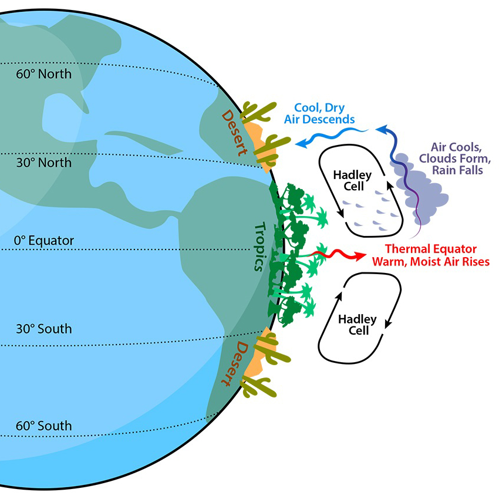
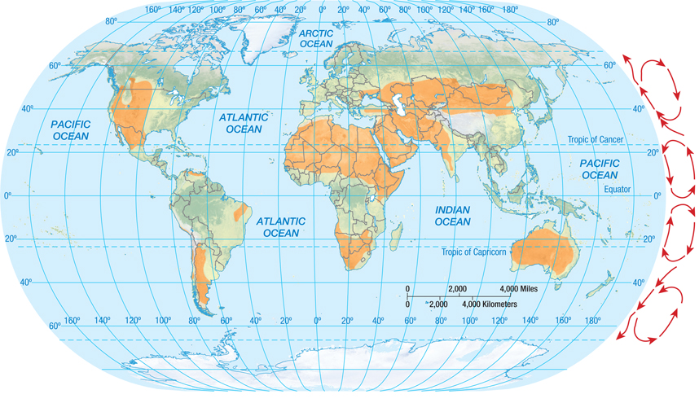
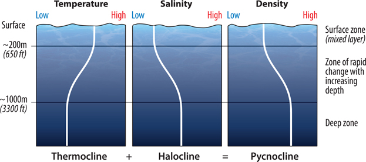

Atmosphere & Ocean Circulation
Week
GEOS 3410
Week Schedule
Tuesday
- Notes from feedbacks assignment
- Wrap-up atmospheric forcings
- Troposphere circulation
Thursday
- Ocean surface circulation
- Deep ocean circulation
- Climate connections
Outside of class
- Week reading (syllabus)
- [Term paper proposal — Oct. 4]
Energy imbalance → meridional heat transfer


Energy imbalance → meridional heat transfer
 PW (1015 W)/ degree latitude
PW (1015 W)/ degree latitude
Physics Refresh
Temp. & Pressure
 Move from Phigh → Plow
Move from Phigh → Plow
Move from Phigh → Plow
Temp. & Density

(buoyancy)
(buoyancy)
Conservation of momentum
$$ \circ \rightarrow $$
(inertia)
Don't need to note these unless you could use the reminder :)
Circulation on a sphere
Motion on a rotating reference frame

Coriolis Force
An inertial force that acts on objects traveling in a rotating reference frame.(conserves momentum)
Coriolis in action (2D)

A useful coriolis force diagram to review.

| Hemisphere | Path veers to the… |
| Northern | Right |
| Southern | Left |
Hemispheric differences in storm systems
Northern Hemisphere
(counterclockwise)
(counterclockwise)
Southern Hemisphere
(clockwise)
(clockwise)

Cyclone = low-pressure system
Finally, it all makes sense…
🌀🚽🌀
🌀🚽🌀

Interhemispheric toilet flushes are all controlled by bowl morphology. Why?
Circulation on a rotating sphere
Intertropical Convergence Zone (ITCZ)

Horse latitudes (±30°)

Dry upper troposphere falls and warms adiabatically
Deserts in orange

Polar cells & the polar front

More on this next week!
All together now — Tropospheric circulation
You should be prepared to construct this from first principles…
Convection stops at the tropopause (usually)

Image: Hussein Kefel
Tropopause height decreases with latitude

More on jet streams next week!
Ocean circulation: surface
Wind – friction → ocean surface

↗ wind direction ↗
Gyres
Large-scale ocean surface transport
Balance of wind-driven surface transport, coriolis effect, and gravity.
Ekman transport

(Northern Hemisphere)
- Wind-driven transport of surface water, friction between water layers, and Coriolis force.
- Ekman layer: depth from surface to reversed flow (~100 m depth)
- Net transport in Ekman layer is orthogonal (90°) to wind.
Ekman transport in the subtropics

Geostrophic Balance
pressure gradient = Coriolis force
Geostrophic flow is the horizontal movement of surface water arising from a balance between the pressure gradient force and Coriolis force
Sketch 5 subtropical gyres
Homework
Add two subpolar gyres in the Arctic and try to figure out the Southern Ocean(hint: focus on the southern Westerlies, the polar easterlies play a larger role near the coast)
Sea surface elevation

Are gyres symmetrical?
Gulf Stream

The gulf stream carries 55 sverdrups (1 Sv = 106 m3/s)
Currents & eddies
Surface current: pronounced limb of a gyre
Eddies: small-scale, chaotic, temporary turbulent circulation associated with currents. The ocean version of weather.

Gulf stream (current) and eddies.
NASA, see also: Perpetual Ocean
Ocean circulation: sea surface to sea floor
Temperature – Salinity – Density

The ocean is stably stratified
Sea surface salinity (SSS)

Practical salinity units (PSU) = g salt/kg water
Gulf Stream
The gulf stream carries 55 sverdrups (1 Sv = 106 m3/s)
Gulf stream → North Atlantic Current

Gulf stream → North Atlantic Current
→ North Atlantic Deep Water (NADW)
Bathymetry controls deep water paths

Atlantic Meridional Overturning Circulation (AMOC)

Atlantic Meridional Overturning Circulation (AMOC)

{kind=link}
{kind=link}
{kind=link}
{kind=link}
{kind=link}
Atlantic Meridional Overturning Circulation (AMOC)
Hydrographic profile of salinity
(dashed lines trace boundaries between water masses, disregard labels)
Atlantic Meridional Overturning Circulation (AMOC)
Hydrographic profile of temperature

Sub-freezing AABW temperatures?
Bathymetry controls deep water paths
Thermohaline Circulation (THC)

Wikipedia: Thermohaline circulation

Timescales of thermohaline circulation
- NADW flows at ~1 cm/s, carries ~20 Sv (Sverdrup = 106 m3/s)
- Typical NADW residence time of 100-600 years (Liu+Tanhua)
- Slower in the Pacific
- Typical deep ocean residence time >1000 years
The role of thermohaline circulation in the climate system
Warm North Atlantic climates

{kind=link}
What happens when THC weakens?
What happens with enhanced flux of freshwater in North Atlantic?
Nutrient recycling

The biological pump
- Phytoplankton take up CO2 (DIC)
- Zooplankton eat phytoplankton and respire CO2
- DIC ↔ POC ↔ DOC
- Particles sink
- C trapped in deep ocean below mesopelagic (~1000 m)
- THC returns deep C (+nutrients) to surface by "venting"
D="dissolved", P="particulate", I="Inorganic", O="organic"
Carbon storage
The oceanic sink accounts for ~48% of the total fossil-fuel and cement-manufacturing emissions …

Projected carbon storage

Heat storage

The ocean has absorbed ~90% of excess heat since the 1970s.
Thermohaline circulation will rise again when we talk about paleoclimate!
Next Week ()
- Week reading (syllabus)
- Tuesday: Weather
- Thursday: Teleconnections & climate oscillations
- Practice quiz/activity Thursday?
- Term paper proposal — Friday Oct. 4